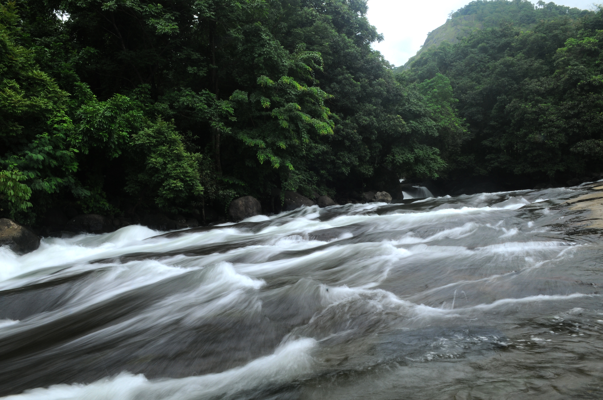

Malappuram
Malappuram is a city in the Indian state of Kerala, spread over an area of 33.61 km². The first municipality in the district formed in 1969, Malappuram serves as the administrative headquarters of Malappuram district. Divided into 40 electoral wards, the city has a population density of 2,083 per square kilometre
top attractions to visit in Malappuram
Adayapara Falls
Adyanpara Falls is a cascading waterfall in the Kurmbalangodu village of Nilambur taluk in Kerala, India. It is 14 kilometres from Nilambur town, and attracts tourists from various parts of Kerala. This is a seasonal waterfall. During Summer, water flow is low.
Teak Museum

Teak Museum is located 4 km from Nilambur, a town in the Malappuram district of Kerala, South India. Teak occurs naturally in India with the main teak forests found in Kerala. The museum, a two-storey building, is the world's first teak museum and is operated by the Kerala Forest Research Institute